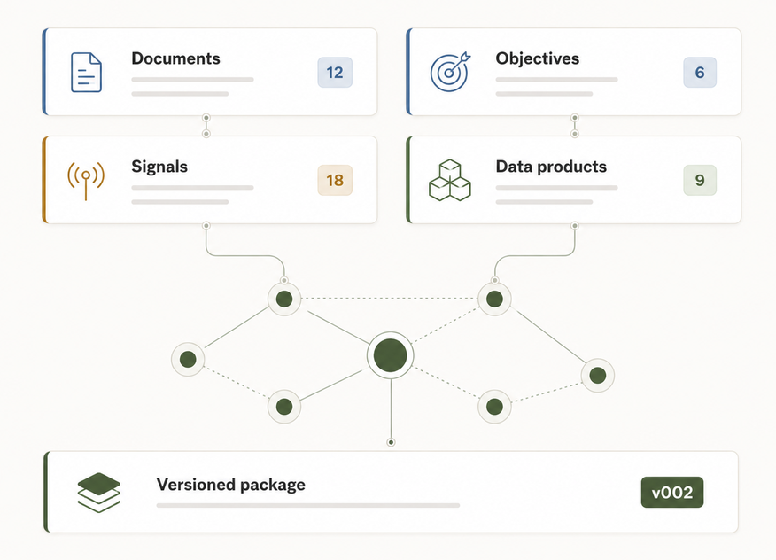

Business context
Connect objectives, signals, use cases and the everyday business files teams already use, including PowerPoint, Word, Excel, email and PDF sources.
MAYSANO PORTFOLIO STUDIO
Turn the PowerPoint decks, Word documents, Excel sheets, emails, PDFs, objectives, signals and use cases your teams already have into a structured portfolio for review, prioritization and delivery. Portfolio Studio keeps the business context connected throughout the process.
Built on open data product standards developed under the Linux Foundation.

Product value
Connect objectives, signals, use cases and the everyday business files teams already use, including PowerPoint, Word, Excel, email and PDF sources.
Generate consistent product definitions, relationships and portfolio packages from material the organization already has.
Review priorities, assumptions and recommendations before moving selected products toward delivery.
How it works
PowerPoint decks, Word documents, Excel sheets, emails, PDFs, objectives, product needs, signals and use cases.
Define scope, language and portfolio-specific instructions.
Portfolio Studio structures the information into connected products and business context.
Leadership and teams review the portfolio, assumptions and recommendations.
Selected products move into integrated delivery workflows, for example Jira, while Studio keeps decision context and delivery progress visible.
Demo
Watch a short walkthrough of the main Portfolio Studio workflow, from business inputs to a decision-ready portfolio.
Business context
Portfolio Studio keeps each data product connected to the business reason behind it. Objectives, signals, needs and use cases remain connected through portfolio review and into delivery. This gives decision-makers more context than a list of technical assets.
This connected context makes portfolios easier to review, explain, hand over and evolve.
Workflow as product
Portfolio Studio does more than generate product definitions. It supports the workflow around them, from business material and portfolio generation through review, decisions, versioning and delivery handoff into tools such as Jira. Delivery progress can be monitored from Studio so the original business context stays connected to execution.
Open standards
Portfolio Studio uses the Open Data Product Specification family developed under the Linux Foundation. This gives the generated portfolio a structured and portable foundation rather than locking its meaning inside the application.
Learn about the open standardsEnterprise deployment
Portfolio Studio is intended for organizations that need portfolio decisions, data product context and delivery handoff to sit inside their own governance model.
The architecture direction supports controlled deployments and integration patterns without presenting every enterprise capability as already production-ready.
Portfolio Studio is deployed for the customer rather than offered as a public multi-tenant SaaS.
Keep decision context, data products and delivery information connected.
Support controlled model providers, policies, guardrails and workload-level configuration.
Architecture designed for identity, permissions, auditability and delivery integrations such as Jira, with progress visible back in Studio.
Pricing
$25,000one-time
For early customers who want a deployed solution and direct product collaboration.
$53,000one-time
For organizations that want Portfolio Studio deployed in their own environment.
From $65,000one-time
For large organizations that need stronger support, governance or custom needs.
All plans include the first year of software license.
Next step
See how Portfolio Studio works with the material and processes your organization already has.